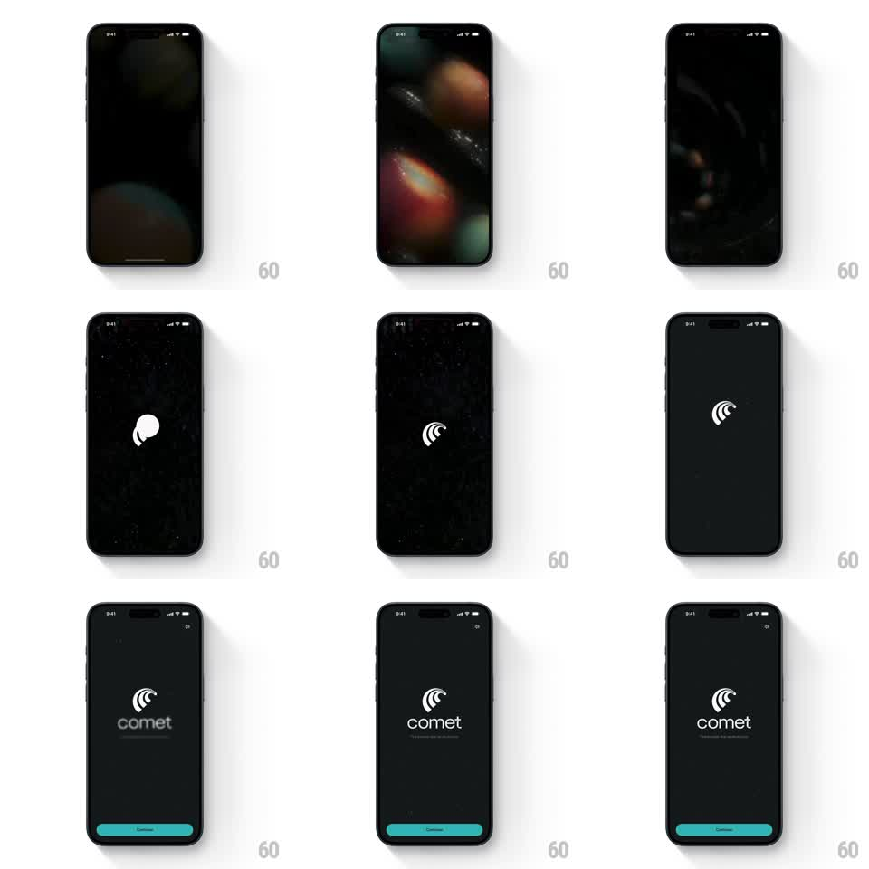

Media
Frame-by-frame

Rebuild this animation 1:1: Comet's splash - a field of soft bokeh orbs fades up out of black, the comet mark draws itself center stage, and the wordmark blur-reveals beneath it before the Continue button slides up.

Rebuild this animation 1:1: Comet's splash - a field of soft bokeh orbs fades up out of black, the comet mark draws itself center stage, and the wordmark blur-reveals beneath it before the Continue button slides up. ## Integration Integration: stack-agnostic spec - springs given as stiffness/damping, timed motions as duration + curve; map every value to your framework and animation library of choice. ## Scene Black splash: center the white comet mark (a swirl of nested arcs), "comet" wordmark below it, a teal Continue pill at the bottom. Behind everything, out-of-focus bokeh circles in muted teal, red, and cream drift slowly. ## Motion spec Pattern: ambient bokeh fade-up with logo draw-on. - The bokeh field fades in from black (600ms) with orbs drifting (each orb translateX/Y +/-20px on its own 6-10s loop, opacity 0.15-0.4) and a slow focus pulse (blur radius +/-4px, 8s). - The comet mark scales in (0.5 -> 1, spring ~280/14) with a 90-degree unwind, its arcs drawing on staggered (outer to inner, 120ms stagger, 300ms each). - The wordmark reveals through a blur-to-sharp transition (blur 12px -> 0, opacity 0 -> 1, 450ms, ease-out). - The Continue button slides up from below the safe area (translateY 60 -> 0, spring ~320/20) and fills teal last, 200ms after the wordmark. ## Calibration - Bokeh is atmosphere, not subject - the mark and wordmark stay crisp white above it. - Total intro lands in about 1.5s; snappy enough for a launch screen. ## Reduced motion Single fade to the final composed state (400ms); no bokeh drift. ## Don't miss - The mark's arcs nest cleanly - innermost arc is the comet head. - Continue is disabled-looking until fully landed; it brightens on arrival.